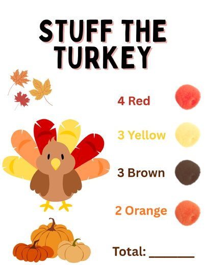
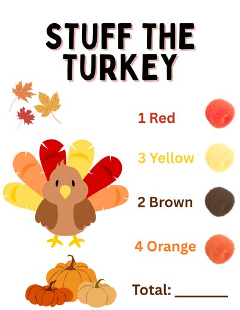
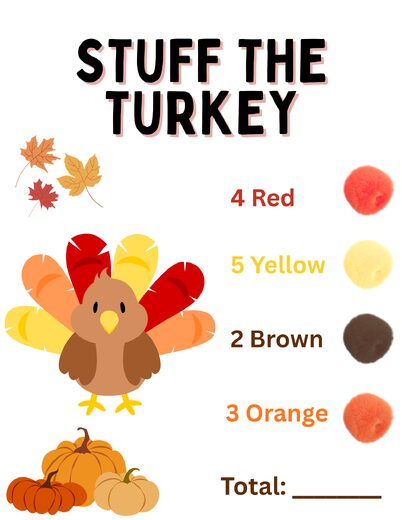
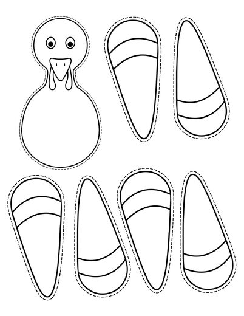

Grace Dittman
Student Teaching Portfolio
Block 2 Math
Block 3 Math
ESS
General Information
Lesson Plans
Student Teaching Journal
Résumé
Search
Home
›
Block 2 Math
›
Week 12
›
Activities
›
November Literacy Groups
›
Stuff the Turkey
Stuff the Turkey

Stuff the Turkey Counting Cards (2 of 6)
CountingCard2.png
Stuff the Turkey Counting Cards (3 of 6)
CountingCard3.png

Stuff the Turkey Counting Cards (4 of 6)
CountingCard4.png

Stuff the Turkey Counting Cards (5 of 6)
CountingCard5.png
Stuff the Turkey Counting Cards (1 of 6)
CountingCard.png

Stuff the Turkey Counting Cards (6 of 6)
Turkey Template.png